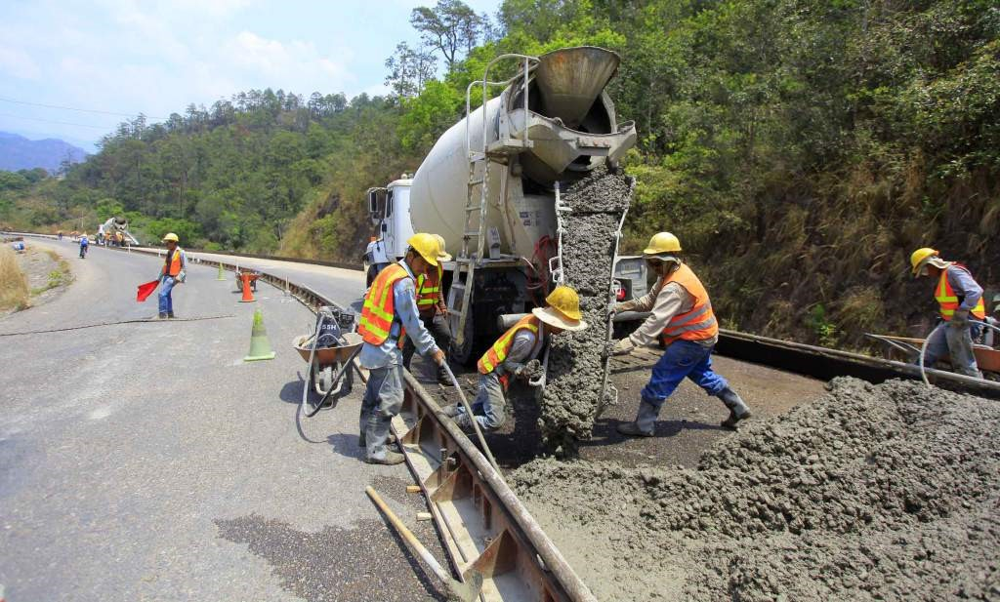

<!DOCTYPE HTML PUBLIC "-//W3C//DTD HTML 4.01//EN" "http://www.w3.org/TR/html4/strict.dtd">
<html>

    <head>
        <meta http-equiv="Content-Type" content="text/html; charset=utf-8">
        <title>Honduras</title>

        <link rel="stylesheet" href="ammap/ammap.css" type="text/css">

        <script src="ammap/ammap.js" type="text/javascript"></script>
        <!-- map file should be included after ammap.js -->
		<script src="ammap/maps/js/hondurasLow.js" type="text/javascript"></script>
        <script>
			var map;

			function writeDevInfo(event) {
			    document.getElementById("devInfo").innerHTML = event.str;
			}

			AmCharts.ready(function() {
			    map = new AmCharts.AmMap();


			    map.balloon.color = "#FFFFFF";

				var icon4= "m 3.6008571,1050.7153 c 0.00782,-0.032 0.1950857,-0.9792 0.4161424,-2.1043 0.2210566,-1.1251 0.4077906,-2.0711 0.4149646,-2.1024 0.00917,-0.04 -0.4697452,-0.4971 -1.6114258,-1.5381 -0.8934581,-0.8147 -1.6188721,-1.4869 -1.6120312,-1.4937 0.019009,-0.019 0.6174315,-0.094 2.5059868,-0.3155 0.949857,-0.1113 1.7572063,-0.2088 1.7941094,-0.2168 0.052442,-0.011 0.2643509,-0.4507 0.9702565,-2.0114 0.4967378,-1.0982 0.9117111,-1.9964 0.9221631,-1.996 0.010452,4e-4 0.4325962,0.8983 0.9380989,1.9953 0.5055027,1.097 0.9219827,1.9946 0.9255111,1.9946 0.00353,0 0.8877101,0.099 1.9648481,0.2193 1.077138,0.1207 2.060806,0.2285 2.18593,0.2397 0.125123,0.011 0.223211,0.03 0.217972,0.043 -0.0052,0.012 -0.730092,0.6899 -1.610784,1.5058 -0.880693,0.816 -1.60126,1.5046 -1.60126,1.5302 0,0.026 0.07477,0.4059 0.166145,0.845 0.434493,2.0877 0.701767,3.4124 0.69073,3.4234 -0.0067,0.01 -0.867259,-0.4658 -1.9124103,-1.0499 -1.1314281,-0.6323 -1.9239053,-1.0558 -1.9586803,-1.0467 -0.032123,0.01 -0.8974262,0.4928 -1.9228955,1.0764 -1.0254693,0.5836 -1.8719378,1.0611 -1.8810409,1.0611 -0.0091,0 -0.010152,-0.026 -0.00233,-0.059 z";

				var dataProvider = {
				    mapVar: AmCharts.maps.hondurasLow,
				    images:
				    //OLANCHO
				    //Turismo
				    [
            //1
            {latitude:14.874450, longitude:-88.068443, svgPath:icon4, color:"#995B5B", scale:2.0, label:"Exportación", labelShiftY:2, zoomLevel:10, title:"Canalización de aguas pluviales y acceso peatonal para Reducir la Vulnerabilidad en el Barrio Monte Fresco, Sector Colonia Orellana del municipio de las Vegas en el Departamento de Santa Bárbara.", description:'</br></br><b>Presupuesto Adjudicado</b></br>4,172,318.61</br></br><b>Monto Final de la Obra con Orden de Cambio</b></br>5,215,386.97</br></br><b>Fecha de Ejecución</b></br>Del 18 de agosto al 16 de diciembre del 2015</br></br><b>Población Beneficiada</b></br><b>Directos: 38,395</b></br><b>Número de personas contratadas para la ejecución de la obra (Dato brindado por el contratista): 66</b> ', descriptionWindowWidth:400, descriptionWindowX:70, descriptionWindowY:70} ,
				    //2
				    {latitude:15.375131, longitude:-87.895064, svgPath:icon4, color:"#C02323", scale:2.0, label:"FASE III", labelShiftY:2, zoomLevel:10, title:"Construcción de Caja Puente para canalizar las aguas pluviales y Reducir la Vulnerabilidad en Aldea El Porvenir en el Municipio de San Manuel del Departamento de Cortés.", description:'</br></br><b>Presupuesto Adjudicado</b></br>4,172,318.61</br></br><b>Monto Final de la Obra con Orden de Cambio</b></br>5,215,386.97</br></br><b>Fecha de Ejecución</b></br>Del 18 de agosto al 16 de diciembre del 2015</br></br><b>Población Beneficiada</b></br><b>Directos: 38,395</b></br><b>Número de personas contratadas para la ejecución de la obra (Dato brindado por el contratista): 66</b> ', descriptionWindowWidth:400, descriptionWindowX:70, descriptionWindowY:70} ,
				    //3
				    {latitude:15.099922, longitude:-88.038614, svgPath:icon4, color:"#86D270", scale:2.0, label:"Inversión", labelShiftY:2, zoomLevel:10, title:"Construcción de Caja Puente para Reducir La Vulnerabilidad  en la Quebrada La Tigra en el municipio de San Antonio en el Departamento de Cortés.", description:'</br></br><b>Presupuesto Adjudicado</b></br>4,172,318.61</br></br><b>Monto Final de la Obra con Orden de Cambio</b></br>5,215,386.97</br></br><b>Fecha de Ejecución</b></br>Del 18 de agosto al 16 de diciembre del 2015</br></br><b>Población Beneficiada</b></br><b>Directos: 38,395</b></br><b>Número de personas contratadas para la ejecución de la obra (Dato brindado por el contratista): 66</b> ', descriptionWindowWidth:400, descriptionWindowX:70, descriptionWindowY:70} ,
            //4 Canal de concreto ciclópeo
 				    {latitude:15.267108, longitude:-87.965195, svgPath:icon4, color:"#151A6F", scale:2.0, label:"Inversión", labelShiftY:2, zoomLevel:10, title:"Canalización de aguas pluviales para Reducir la Vulnerabilidad en el Barrio Suyapa calle que conduce a la Aldea La Venta del Municipio de Pimienta del Departamento de Cortés.", description:'</br></br><b>Presupuesto Adjudicado</b></br>4,172,318.61</br></br><b>Monto Final de la Obra con Orden de Cambio</b></br>5,215,386.97</br></br><b>Fecha de Ejecución</b></br>Del 18 de agosto al 16 de diciembre del 2015</br></br><b>Población Beneficiada</b></br><b>Directos: 38,395</b></br><b>Número de personas contratadas para la ejecución de la obra (Dato brindado por el contratista): 66</b> ', descriptionWindowWidth:400, descriptionWindowX:70, descriptionWindowY:70} ,
            //5 Cuneta Tramo II
            {latitude:15.200486, longitude:-87.959930, svgPath:icon4, color:"#9932CC", scale:2.0, label:"FASE III", labelShiftY:2, zoomLevel:10, title:"Canalización de Aguas Pluviales para Reducir la Vulnerabilidad en la comunidad  El Nuevo Higuerito Central del Municipio de Potrerillos en el Departamento de Cortés.", description:'</br></br><b>Presupuesto Adjudicado</b></br>4,172,318.61</br></br><b>Monto Final de la Obra con Orden de Cambio</b></br>5,215,386.97</br></br><b>Fecha de Ejecución</b></br>Del 18 de agosto al 16 de diciembre del 2015</br></br><b>Población Beneficiada</b></br><b>Directos: 38,395</b></br><b>Número de personas contratadas para la ejecución de la obra (Dato brindado por el contratista): 66</b> ', descriptionWindowWidth:400, descriptionWindowX:70, descriptionWindowY:70} ,
            //6
            {latitude:15.306977, longitude:-87.692403, svgPath:icon4, color:"#20B2AA", scale:2.0, label:"FASE III", labelShiftY:2, zoomLevel:10, title:"FASE III", description:'Canalización de Aguas Pluviales y Protección en la Margen Izquierda de la Laguna el Carmen, para Reducción del Riesgo en la Colonia Valle de Sula, en el Municipio de Choloma, Departamento de Cortés.</br></br><b>Presupuesto Adjudicado</b></br>4,172,318.61</br></br><b>Monto Final de la Obra con Orden de Cambio</b></br>5,215,386.97</br></br><b>Fecha de Ejecución</b></br>Del 18 de agosto al 16 de diciembre del 2015</br></br><b>Población Beneficiada</b></br><b>Directos: 38,395</b></br><b>Número de personas contratadas para la ejecución de la obra (Dato brindado por el contratista): 66</b> ', descriptionWindowWidth:400, descriptionWindowX:70, descriptionWindowY:70} ,
            //7
            {latitude:15.392680, longitude:-87.799208, svgPath:icon4, color:"#3CB371", scale:2.0, label:"FASE III", labelShiftY:2, zoomLevel:10, title:"Construcción de Colector de Aguas Pluviales para reducción del riesgo en el barrio San Juan- Río Pelo y zonas aledañas, en el Municipio de El Progreso, Departamento de Yoro", description:'</br></br><b>Presupuesto Adjudicado</b></br>4,172,318.61</br></br><b>Monto Final de la Obra con Orden de Cambio</b></br>5,215,386.97</br></br><b>Fecha de Ejecución</b></br>Del 18 de agosto al 16 de diciembre del 2015</br></br><b>Población Beneficiada</b></br><b>Directos: 38,395</b></br><b>Número de personas contratadas para la ejecución de la obra (Dato brindado por el contratista): 66</b> ', descriptionWindowWidth:400, descriptionWindowX:70, descriptionWindowY:70} ,
            //8
            {latitude:15.273238, longitude:-88.281001, svgPath:icon4, color:"#40E0D0", scale:2.0, label:"FASE III", labelShiftY:2, zoomLevel:10, title:"Construcción de muro de gaviones para reducir el riesgo  en la margen izquierda del rio Cacaulapa y el Barrio Pueblo Nuevo del Municipio de Petoa, Departamento de Santa Bárbara", description:'</br></br><b>Presupuesto Adjudicado</b></br>4,172,318.61</br></br><b>Monto Final de la Obra con Orden de Cambio</b></br>5,215,386.97</br></br><b>Fecha de Ejecución</b></br>Del 18 de agosto al 16 de diciembre del 2015</br></br><b>Población Beneficiada</b></br><b>Directos: 38,395</b></br><b>Número de personas contratadas para la ejecución de la obra (Dato brindado por el contratista): 66</b> ', descriptionWindowWidth:400, descriptionWindowX:70, descriptionWindowY:70} ,
            //9
            {latitude:15.288633, longitude:-87.477405, svgPath:icon4, color:"#DEB887", scale:2.0, label:"FASE III", labelShiftY:2, zoomLevel:10, title:"Protección de la Margen Izquierda de la Quebrada Santa Cruz para reducción del riesgo en la Aldea Cuyamapa, Municipio de Morazán, Departamento de Yoro.", description:'</br></br><b>Presupuesto Adjudicado</b></br>4,172,318.61</br></br><b>Monto Final de la Obra con Orden de Cambio</b></br>5,215,386.97</br></br><b>Fecha de Ejecución</b></br>Del 18 de agosto al 16 de diciembre del 2015</br></br><b>Población Beneficiada</b></br><b>Directos: 38,395</b></br><b>Número de personas contratadas para la ejecución de la obra (Dato brindado por el contratista): 66</b> ', descriptionWindowWidth:400, descriptionWindowX:70, descriptionWindowY:70} ,
             //10
             {latitude:15.433900, longitude:-87.942440, svgPath:icon4, color:"#6B8E23", scale:2.0, label:"FASE III", labelShiftY:2, zoomLevel:10, title:"Protección de la Margen Izquierda de Bordo, Sector El Zapote, Guaruma I, para la reducción del riesgo sobre el Río Chamelecón del Municipio de La Lima, Departamento de Cortés", description:'</br></br><b>Presupuesto Adjudicado</b></br>4,172,318.61</br></br><b>Monto Final de la Obra con Orden de Cambio</b></br>5,215,386.97</br></br><b>Fecha de Ejecución</b></br>Del 18 de agosto al 16 de diciembre del 2015</br></br><b>Población Beneficiada</b></br><b>Directos: 38,395</b></br><b>Número de personas contratadas para la ejecución de la obra (Dato brindado por el contratista): 66</b> ', descriptionWindowWidth:400, descriptionWindowX:70, descriptionWindowY:70} ,
             //11
             {latitude:14.980551, longitude:-87.890722, svgPath:icon4, color:"#D2691E", scale:2.0, label:"FASE III", labelShiftY:2, zoomLevel:10, title:"Construcción de Colector de Aguas Pluviales para reducción del riesgo en los barrios El Calvario y El Centro del Municipio de Santa Cruz de Yojoa, Departamento de Cortés", description:'</br></br><b>Presupuesto Adjudicado</b></br>4,172,318.61</br></br><b>Monto Final de la Obra con Orden de Cambio</b></br>5,215,386.97</br></br><b>Fecha de Ejecución</b></br>Del 18 de agosto al 16 de diciembre del 2015</br></br><b>Población Beneficiada</b></br><b>Directos: 38,395</b></br><b>Número de personas contratadas para la ejecución de la obra (Dato brindado por el contratista): 66</b> ', descriptionWindowWidth:400, descriptionWindowX:70, descriptionWindowY:70} ,
             //12
             {latitude:15.435355, longitude:-87.945359, svgPath:icon4, color:"#778899", scale:2.0, label:"FASE III", labelShiftY:2, zoomLevel:10, title:"Protección de la margen izquierda del bordo en el Sector El Zapote para la reducción del riesgo sobre el Río Chamelecón en el Municipio de La Lima, Departamento de Cortés", description:'</br></br><b>Presupuesto Adjudicado</b></br>4,172,318.61</br></br><b>Monto Final de la Obra con Orden de Cambio</b></br>5,215,386.97</br></br><b>Fecha de Ejecución</b></br>Del 18 de agosto al 16 de diciembre del 2015</br></br><b>Población Beneficiada</b></br><b>Directos: 38,395</b></br><b>Número de personas contratadas para la ejecución de la obra (Dato brindado por el contratista): 66</b> ', descriptionWindowWidth:400, descriptionWindowX:70, descriptionWindowY:70} ,
             //13
             {latitude:15.610821, longitude:-88.312125, svgPath:icon4, color:"#B077B7", scale:2.0, label:"FASE III", labelShiftY:2, zoomLevel:10, title:"Construcción de bordo de protección sobre la margen izquierda del río San Idelfonso para la reducción del riesgo en la aldea Potrerillos, Municipio de Omoa, departamento de Cortés", description:'</br></br><b>Presupuesto Adjudicado</b></br>4,172,318.61</br></br><b>Monto Final de la Obra con Orden de Cambio</b></br>5,215,386.97</br></br><b>Fecha de Ejecución</b></br>Del 18 de agosto al 16 de diciembre del 2015</br></br><b>Población Beneficiada</b></br><b>Directos: 38,395</b></br><b>Número de personas contratadas para la ejecución de la obra (Dato brindado por el contratista): 66</b> ', descriptionWindowWidth:400, descriptionWindowX:70, descriptionWindowY:70} ,
             //14
             {latitude:15.770758, longitude:-87.841707, svgPath:icon4, color:"#C61A5F", scale:2.0, label:"FASE III", labelShiftY:2, zoomLevel:10, title:"Protección de talud de la margen derecha del puente metálico sobre el rio Chamelecón para la reducción del riesgo en la aldea Baracoa del Municipio de Puerto Cortés, departamento de Cortés.", description:'</br></br><b>Presupuesto Adjudicado</b></br>4,172,318.61</br></br><b>Monto Final de la Obra con Orden de Cambio</b></br>5,215,386.97</br></br><b>Fecha de Ejecución</b></br>Del 18 de agosto al 16 de diciembre del 2015</br></br><b>Población Beneficiada</b></br><b>Directos: 38,395</b></br><b>Número de personas contratadas para la ejecución de la obra (Dato brindado por el contratista): 66</b> ', descriptionWindowWidth:400, descriptionWindowX:70, descriptionWindowY:70} ,
             //15 Bordo
             {latitude:15.563363, longitude:-87.948244, svgPath:icon4, color:"#8EA54C", scale:2.0, label:"FASE III", labelShiftY:2, zoomLevel:10, title:"Canalización de Aguas Pluviales y Protección en la Margen Izquierda de la Laguna el Carmen, para Reducción del Riesgo en la Colonia Valle de Sula, en el Municipio de Choloma, Departamento de Cortés.", description:'</br></br><b>Presupuesto Adjudicado</b></br>4,172,318.61</br></br><b>Monto Final de la Obra con Orden de Cambio</b></br>5,215,386.97</br></br><b>Fecha de Ejecución</b></br>Del 18 de agosto al 16 de diciembre del 2015</br></br><b>Población Beneficiada</b></br><b>Directos: 38,395</b></br><b>Número de personas contratadas para la ejecución de la obra (Dato brindado por el contratista): 66</b> ', descriptionWindowWidth:400, descriptionWindowX:70, descriptionWindowY:70} ,
             //16
             {latitude:15.750510, longitude:-87.488412, svgPath:icon4, color:"#0489B1", scale:2.0, label:"FASE III", labelShiftY:2, zoomLevel:10, title:"Canalización de Aguas Pluviales para Reducción del Riesgo en la Colonia Venecia, en el Municipio de Tela, Departamento de Atlántida", description:'</br></br><b>Presupuesto Adjudicado</b></br>4,172,318.61</br></br><b>Monto Final de la Obra con Orden de Cambio</b></br>5,215,386.97</br></br><b>Fecha de Ejecución</b></br>Del 18 de agosto al 16 de diciembre del 2015</br></br><b>Población Beneficiada</b></br><b>Directos: 38,395</b></br><b>Número de personas contratadas para la ejecución de la obra (Dato brindado por el contratista): 66</b> ', descriptionWindowWidth:400, descriptionWindowX:70, descriptionWindowY:70} ,
             //17
             {latitude:15.314296, longitude:-87.989113, svgPath:icon4, color:"#FFCC00", scale:2.0, label:"FASE III", labelShiftY:2, zoomLevel:10, title:"Protección de Márgenes del Canal de Aguas Pluviales y Reparación de Caja Puente para Reducir el Riesgo en Colonia La Independencia, Municipio de Villanueva, Departamento de Cortés.", description:'</br></br><b>Presupuesto Adjudicado</b></br>4,172,318.61</br></br><b>Monto Final de la Obra con Orden de Cambio</b></br>5,215,386.97</br></br><b>Fecha de Ejecución</b></br>Del 18 de agosto al 16 de diciembre del 2015</br></br><b>Población Beneficiada</b></br><b>Directos: 38,395</b></br><b>Número de personas contratadas para la ejecución de la obra (Dato brindado por el contratista): 66</b> ', descriptionWindowWidth:400, descriptionWindowX:70, descriptionWindowY:70} ,
             //18
             {latitude:15.276984, longitude:-88.279517, svgPath:icon4, color:"#088A85", scale:2.0, label:"FASE III", labelShiftY:2, zoomLevel:10, title:"Etapa II: Construcción de Muro de Gaviones para Reducir el Riesgo en la Margen Izquierda del Rio Cacaulapa y la Aldea Pueblo Nuevo del Municipio de Petoa, Departamento de Santa Bárbara", description:'</br></br><b>Presupuesto Adjudicado</b></br>4,172,318.61</br></br><b>Monto Final de la Obra con Orden de Cambio</b></br>5,215,386.97</br></br><b>Fecha de Ejecución</b></br>Del 18 de agosto al 16 de diciembre del 2015</br></br><b>Población Beneficiada</b></br><b>Directos: 38,395</b></br><b>Número de personas contratadas para la ejecución de la obra (Dato brindado por el contratista): 66</b> ', descriptionWindowWidth:400, descriptionWindowX:70, descriptionWindowY:70} ,
             //19
             {latitude:15.319721, longitude:-87.944241, svgPath:icon4, color:"#886A08", scale:2.0, label:"FASE III", labelShiftY:2, zoomLevel:10, title:"Canalización de Aguas Pluviales para la Reducción del Riesgo en Aldea el Plan, en el Municipio de San Manuel, Departamento de Cortés.", description:'</br></br><b>Presupuesto Adjudicado</b></br>4,172,318.61</br></br><b>Monto Final de la Obra con Orden de Cambio</b></br>5,215,386.97</br></br><b>Fecha de Ejecución</b></br>Del 18 de agosto al 16 de diciembre del 2015</br></br><b>Población Beneficiada</b></br><b>Directos: 38,395</b></br><b>Número de personas contratadas para la ejecución de la obra (Dato brindado por el contratista): 66</b> ', descriptionWindowWidth:400, descriptionWindowX:70, descriptionWindowY:70} ,
             //20
             {latitude:15.257172, longitude:-87.613708, svgPath:icon4, color:"#088A08", scale:2.0, label:"FASE III", labelShiftY:2, zoomLevel:10, title:"Canalización de Aguas Pluviales para la Reducción del Riesgo en la Aldea San Juan Camalote del Municipio de Morazán, Departamento de Yoro", description:'</br></br><b>Presupuesto Adjudicado</b></br>4,172,318.61</br></br><b>Monto Final de la Obra con Orden de Cambio</b></br>5,215,386.97</br></br><b>Fecha de Ejecución</b></br>Del 18 de agosto al 16 de diciembre del 2015</br></br><b>Población Beneficiada</b></br><b>Directos: 38,395</b></br><b>Número de personas contratadas para la ejecución de la obra (Dato brindado por el contratista): 66</b> ', descriptionWindowWidth:400, descriptionWindowX:70, descriptionWindowY:70} ,
             //21 Tramo 1
             {latitude:15.406883, longitude:-87.798186, svgPath:icon4, color:"#8A0868", scale:2.0, label:"FASE III", labelShiftY:2, zoomLevel:10, title:"Canalización de Aguas pluviales en el Sector Nor-este de la ciudad de El Progreso, Municipio El Progreso, Departamento de Yoro.", description:'</br></br><b>Presupuesto Adjudicado</b></br>4,172,318.61</br></br><b>Monto Final de la Obra con Orden de Cambio</b></br>5,215,386.97</br></br><b>Fecha de Ejecución</b></br>Del 18 de agosto al 16 de diciembre del 2015</br></br><b>Población Beneficiada</b></br><b>Directos: 38,395</b></br><b>Número de personas contratadas para la ejecución de la obra (Dato brindado por el contratista): 66</b> ', descriptionWindowWidth:400, descriptionWindowX:70, descriptionWindowY:70} ,
             //21 Tramo 2
             {latitude:15.406558, longitude:-87.798590, svgPath:icon4, color:"#8A0868", scale:2.0, label:"FASE III", labelShiftY:2, zoomLevel:10, title:"Canalización de Aguas pluviales en el Sector Nor-este de la ciudad de El Progreso, Municipio El Progreso, Departamento de Yoro.", description:'</br></br><b>Presupuesto Adjudicado</b></br>4,172,318.61</br></br><b>Monto Final de la Obra con Orden de Cambio</b></br>5,215,386.97</br></br><b>Fecha de Ejecución</b></br>Del 18 de agosto al 16 de diciembre del 2015</br></br><b>Población Beneficiada</b></br><b>Directos: 38,395</b></br><b>Número de personas contratadas para la ejecución de la obra (Dato brindado por el contratista): 66</b> ', descriptionWindowWidth:400, descriptionWindowX:70, descriptionWindowY:70} ,
             //21 Tramo 3
             {latitude:15.407426, longitude:-87.798553, svgPath:icon4, color:"#8A0868", scale:2.0, label:"FASE III", labelShiftY:2, zoomLevel:10, title:"Canalización de Aguas pluviales en el Sector Nor-este de la ciudad de El Progreso, Municipio El Progreso, Departamento de Yoro.", description:'</br></br><b>Presupuesto Adjudicado</b></br>4,172,318.61</br></br><b>Monto Final de la Obra con Orden de Cambio</b></br>5,215,386.97</br></br><b>Fecha de Ejecución</b></br>Del 18 de agosto al 16 de diciembre del 2015</br></br><b>Población Beneficiada</b></br><b>Directos: 38,395</b></br><b>Número de personas contratadas para la ejecución de la obra (Dato brindado por el contratista): 66</b> ', descriptionWindowWidth:400, descriptionWindowX:70, descriptionWindowY:70} ,
             //22  Tramo 1
             {latitude:14.869532, longitude:-88.071630, svgPath:icon4, color:"#01DFA5", scale:2.0, label:"FASE III", labelShiftY:2, zoomLevel:10, title:"Obras de Protección en Márgenes de la Quebrada Piedras Amarillas para Reducir el Riesgo en el Municipio de Las Vegas, Departamento de Santa Bárbara", description:'</br></br><b>Presupuesto Adjudicado</b></br>4,172,318.61</br></br><b>Monto Final de la Obra con Orden de Cambio</b></br>5,215,386.97</br></br><b>Fecha de Ejecución</b></br>Del 18 de agosto al 16 de diciembre del 2015</br></br><b>Población Beneficiada</b></br><b>Directos: 38,395</b></br><b>Número de personas contratadas para la ejecución de la obra (Dato brindado por el contratista): 66</b> ', descriptionWindowWidth:400, descriptionWindowX:70, descriptionWindowY:70} ,
             //22  Tramo 2
             {latitude:14.868127, longitude:-88.069523, svgPath:icon4, color:"#01DFA5", scale:2.0, label:"FASE III", labelShiftY:2, zoomLevel:10, title:"Obras de Protección en Márgenes de la Quebrada Piedras Amarillas para Reducir el Riesgo en el Municipio de Las Vegas, Departamento de Santa Bárbara", description:'</br></br><b>Presupuesto Adjudicado</b></br>4,172,318.61</br></br><b>Monto Final de la Obra con Orden de Cambio</b></br>5,215,386.97</br></br><b>Fecha de Ejecución</b></br>Del 18 de agosto al 16 de diciembre del 2015</br></br><b>Población Beneficiada</b></br><b>Directos: 38,395</b></br><b>Número de personas contratadas para la ejecución de la obra (Dato brindado por el contratista): 66</b> ', descriptionWindowWidth:400, descriptionWindowX:70, descriptionWindowY:70} ,
             //23
             {latitude:15.770007, longitude:-88.038084, svgPath:icon4, color:"#81F7BE", scale:2.0, label:"FASE III", labelShiftY:2, zoomLevel:10, title:"Canalización de aguas pluviales para reducir el riesgo en el sector sur del casco urbano del municipio de Omoa, departamento de Cortés.", description:'</br></br><b>Presupuesto Adjudicado</b></br>4,172,318.61</br></br><b>Monto Final de la Obra con Orden de Cambio</b></br>5,215,386.97</br></br><b>Fecha de Ejecución</b></br>Del 18 de agosto al 16 de diciembre del 2015</br></br><b>Población Beneficiada</b></br><b>Directos: 38,395</b></br><b>Número de personas contratadas para la ejecución de la obra (Dato brindado por el contratista): 66</b> ', descriptionWindowWidth:400, descriptionWindowX:70, descriptionWindowY:70} ,

				    	//Inversión
				    ]
				    //Orgullo {latitude:15.743435, longitude:-86.10586, svgPath:icon6, color:"#D91F82", scale:2.0, label:"", labelShiftY:2, zoomLevel:10, title:"Copán", description:"<strong>New York is the most populous city in the United States and the center of the New York Metropolitan Area, one of the most populous metropolitan areas in the world.</strong>"}

				};

			    map.dataProvider = dataProvider;

			    map.smallMap = new AmCharts.SmallMap();

			    // developer mode related
			    map.developerMode = true;
			    map.addListener("writeDevInfo", writeDevInfo);

			    map.write("mapdiv");

			});
       </script>
    </head>

    <body>

		<p class="ammapAlert"></p>
    	<br>
        <div id="mapdiv" style="width: 1280px; background-color:#E6E6E6; height: 700px;"></div>
		<br>
    </body>

</html>
